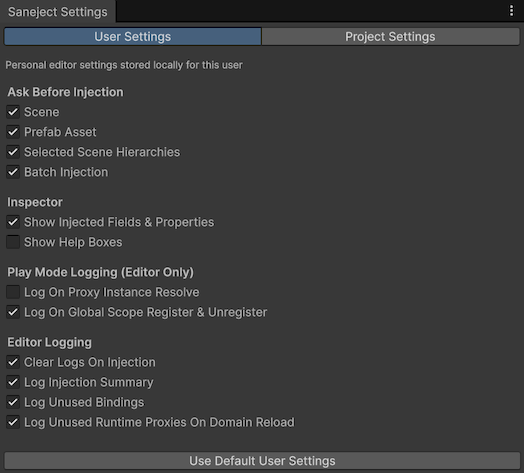
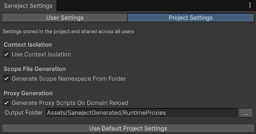

Settings
Saneject settings control editor behavior for injection, inspector presentation, logging, and code generation.
The Settings window has two tabs:
User Settings: personal settings stored on your machine.Project Settings: shared settings stored in the Unity project.
Open the Settings window
Use the Unity main menu:
Saneject/Settings
This opens the Saneject Settings editor window.
User settings vs project settings
| Type | ScopeScopeMonoBehaviour that declares bindings for a part of your hierarchy. |
Storage | Shared with team |
|---|---|---|---|
User Settings |
Current Unity user on current machine | EditorPrefs keys with prefix SanejectSettings_ |
No |
Project Settings |
Entire Unity project | ProjectSettings/Saneject/ProjectSettings.json |
Yes, if the file is version controlled |
Important behavior:
- Settings are editable only in Edit Mode.
- Outside the Unity Editor, settings access falls back to default values.
- Reset actions show a confirmation dialog before applying changes.
User settings
User settings are stored locally on your machine using EditorPrefs.

Ask Before Injection
All of these default to true, which shows a confirmation dialog before injection runsInjection runOne execution of the injection pipeline for a chosen selection, context walk filter, and active set of targets..
| Setting | What it controls |
|---|---|
Scene |
Ask before injecting the current scene. |
Prefab Asset |
Ask before injecting the current prefab assetPrefab assetReusable prefab definition in the Project window.. |
Selected Scene Hierarchies |
Ask before injecting selected scene hierarchies. |
Batch Injection |
Ask before batch injectionBatch injectionRunning injection across multiple selected scene and prefab assets in one operation. runs. |
These toggles affect injection commands and batch commands described in Injection toolbar & context menus and Batch injection.
Inspector
All of these default to true.
| Setting | What it controls |
|---|---|
Show Injected Fields & Properties |
Shows members marked with [Inject] and [field: Inject] in inspectors. |
Show Help Boxes |
Shows explanatory Saneject help boxes in inspectors. |
Play Mode Logging (Editor Only)
All of these default to true.
| Setting | What it controls |
|---|---|
Log On Proxy Instance Resolve |
Logs when a runtime proxyRuntime proxyScriptableObject placeholder asset (RuntimeProxy<TComponent>) injected into interface members at editor time and swapped to the real instance during scope startup. resolves its runtime instance. |
Log On Global Scope Register & Unregister |
Logs global registrationGlobal registrationEntry added to GlobalScope at runtime, keyed by the component's concrete type and owned by the caller that registered it. lifecycle events in GlobalScope. |
Editor Logging
All of these default to true.
| Setting | What it controls |
|---|---|
Clear Logs On Injection |
Clears the Unity Console before an injection runInjection runOne execution of the injection pipeline for a chosen selection, context walk filter, and active set of targets. starts. |
Log Injection Summary |
Writes end-of-run summary logs. |
Log Unused Bindings |
Warns when bindingsBindingInstruction declared in a Scope that tells Saneject what to resolve, how to inject it, and where to search. were declared but not used in a run. |
Log Unused Runtime Proxies On Domain Reload |
On domain reload, scans for runtime proxyRuntime proxyScriptableObject placeholder asset (RuntimeProxy<TComponent>) injected into interface members at editor time and swapped to the real instance during scope startup. assets and scripts that are not referenced by any scopeScopeMonoBehaviour that declares bindings for a part of your hierarchy. bindingBindingInstruction declared in a Scope that tells Saneject what to resolve, how to inject it, and where to search. and logs findings. |
For logging semantics and output shape, see Logging & validation.
Project settings
Project settings are stored in the Unity project at ProjectSettings/Saneject/ProjectSettings.json and are version controlled if the project is under source control, which means that these settings are shared with team members.

Context Isolation
| Setting | Default | What it controls |
|---|---|---|
Use Context Isolation |
false |
Enables strict contextContextSerialization boundary Saneject uses during injection to decide scope traversal and candidate eligibility. boundaries during resolution. When enabled, scene and prefab-instance dependencies resolve only inside the same contextContextSerialization boundary Saneject uses during injection to decide scope traversal and candidate eligibility.. Prefab assetsPrefab assetReusable prefab definition in the Project window. are always context-isolated. |
For details on contextContextSerialization boundary Saneject uses during injection to decide scope traversal and candidate eligibility. behavior, see Context.
Scope File Generation
| Setting | Default | What it controls |
|---|---|---|
Generate Scope Namespace From Folder |
true |
When creating a new scopeScopeMonoBehaviour that declares bindings for a part of your hierarchy. from Assets/Saneject/Create New Scope, generates a namespace based on the scopeScopeMonoBehaviour that declares bindings for a part of your hierarchy. file's folder path. |
Proxy Generation
| Setting | Default | What it controls |
|---|---|---|
Generate Proxy Scripts On Domain Reload |
true |
Automatically generates missing runtime proxyRuntime proxyScriptableObject placeholder asset (RuntimeProxy<TComponent>) injected into interface members at editor time and swapped to the real instance during scope startup. scripts on Unity domain reload. |
Output Folder |
Assets/SanejectGenerated/RuntimeProxies |
Target folder for auto-generated runtime proxyRuntime proxyScriptableObject placeholder asset (RuntimeProxy<TComponent>) injected into interface members at editor time and swapped to the real instance during scope startup. scripts and assets. |
Output Folder notes:
- The folder picker accepts only folders under the current project's
Assetsdirectory. - If the picker selects a folder outside
Assets, Saneject logs a warning and keeps the current value. - Typed values are sanitized to forward slashes and invalid path characters are removed.
For runtime proxyRuntime proxyScriptableObject placeholder asset (RuntimeProxy<TComponent>) injected into interface members at editor time and swapped to the real instance during scope startup. behavior, see Runtime proxy.
Reset settings to defaults
The Settings window includes two reset actions:
Use Default User Settings: clears Saneject user keys fromEditorPrefs.Use Default Project Settings: rewrites Saneject project settingsProject settingsSaneject settings shared at project scope, stored inProjectSettings/Saneject/ProjectSettings.jsonand available fromSaneject/Settings -> Project Settings. to defaults inProjectSettings/Saneject/ProjectSettings.json.
Use project reset carefully because it affects all contributors who use the project settingsProject settingsSaneject settings shared at project scope, stored in ProjectSettings/Saneject/ProjectSettings.json and available from Saneject/Settings -> Project Settings. file.